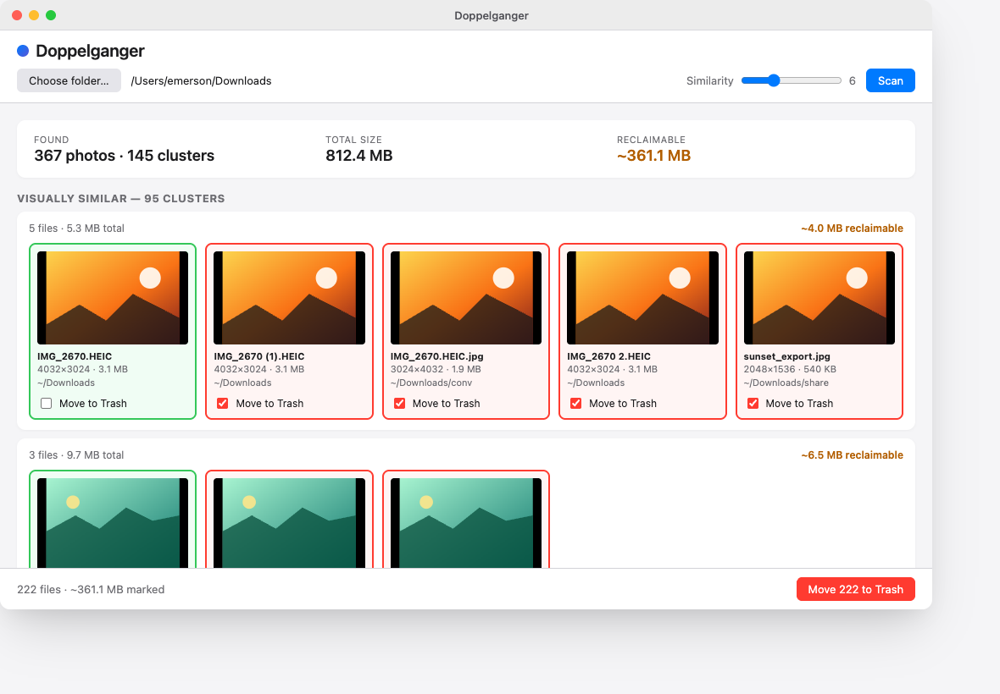

Doppelganger
Find duplicate and visually-similar photos in any folder. Move what you don't want to the system Trash — locally, reversibly, free.

Download
macOS: the build is unsigned. After dragging it into Applications, run this once:
xattr -d com.apple.quarantine /Applications/Doppelganger.appHow it works
-
1. Point it at a folder
Pick any directory —
Downloads, an export, an external drive. Doppelganger walks the tree and skips your Photos library bundle. -
2. It finds the twins
First pass: byte-identical duplicates (content hash). Second pass: visually similar — resized, recompressed, slightly cropped — via perceptual hashing.
-
3. You choose what stays
Each cluster gets a suggested keeper. Untick anything you want to keep, hit Move to Trash. Recover with Finder “Put Back” if you change your mind.
Build from source
Prerequisites: Rust 1.92+, Bun (or Node 20+ / npm / pnpm), and your platform's Tauri prerequisites (webview deps on Linux, Xcode CLT on macOS, MS Build Tools on Windows).
git clone https://github.com/emerleite/doppelganger
cd doppelganger
bun install
bun run tauri dev # run from source
bun run tauri build # produce a release bundle in src-tauri/target/release/